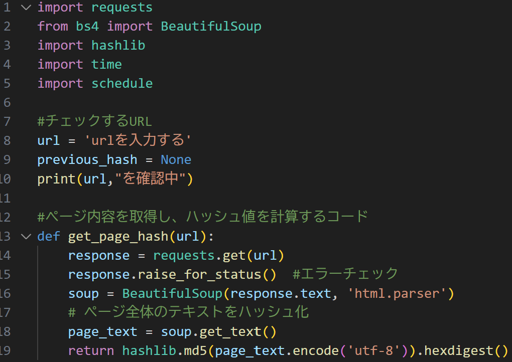
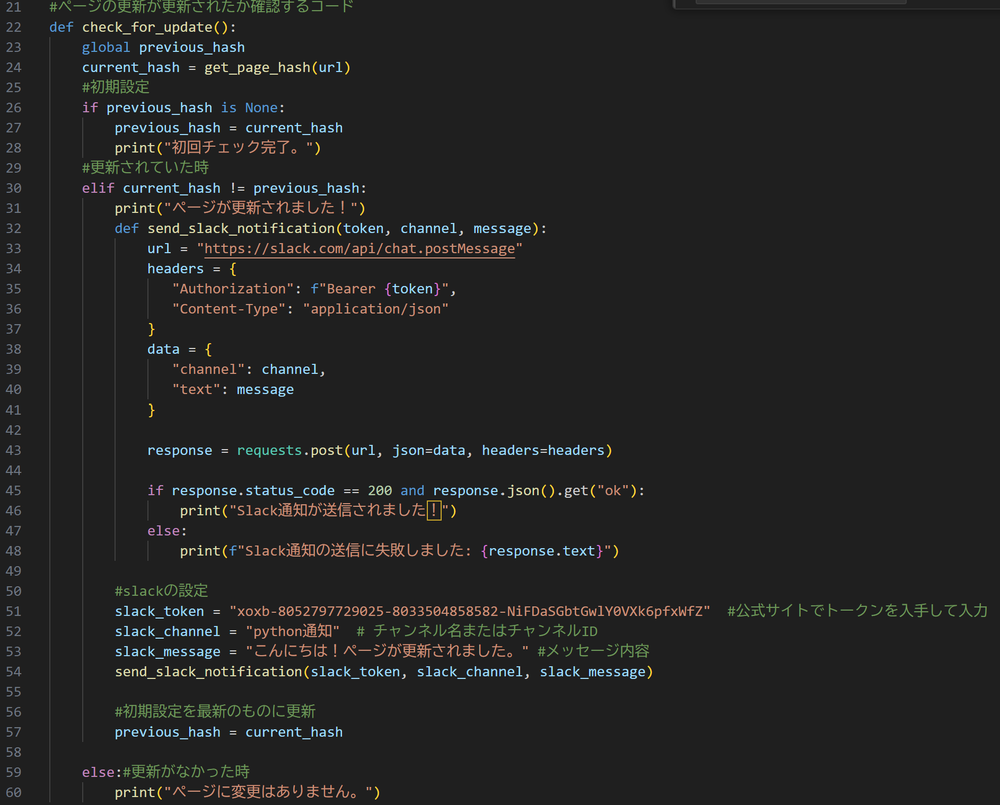
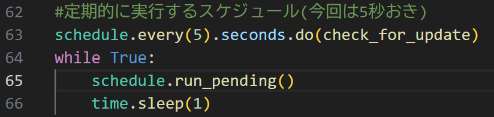

python課題2024/11/12
作成したapi
今回、グループの話し合いで、「ショッピングサイトの新しい商品やセールが登場した時や、webclassの課題が出された時に通知してくれるものが欲しい」ということになったので、
webページが更新されたときにスマホに通知してくれるapiをchatGPTを参考にしながら作成しました。
また、初めは通知する方法にGmailを採用しようとしたのですが、なぜかUnicode errerが起きてしまうので(UTF-8を使っているのに、asciiのエラーが出る(？？？))
今回はSlack apiを取り入れました。
実際に動かしている動画
詳細
①

この部分では、importやurlにアクセスといった初期設定をしています。8行目にチェックしたいurlを入力します。
②

この部分でページの初期内容を記録し、変更があったらslackに通知するようになっています。51~53行目はユーザーによって異なります。
③

この部分で5秒おきに実行するループを組んでいます。63行目の部分を変更することで実行する間隔を変更できます。
さいごに
7~10行目の部分を変更することでログインが必要なページであったり、ページ内の特定部分だけ変更をチェックする、といった場合にも対応できるようですが、今回は難しかったです。
参考サイト
Slack api
Slackの通知がスマホに届かないときの対処法
【これを読めば誰でも出来るSlackアプリの作り方】SlackAPIを使うための準備
ハッシュ化と暗号化の違いとは？
chat君